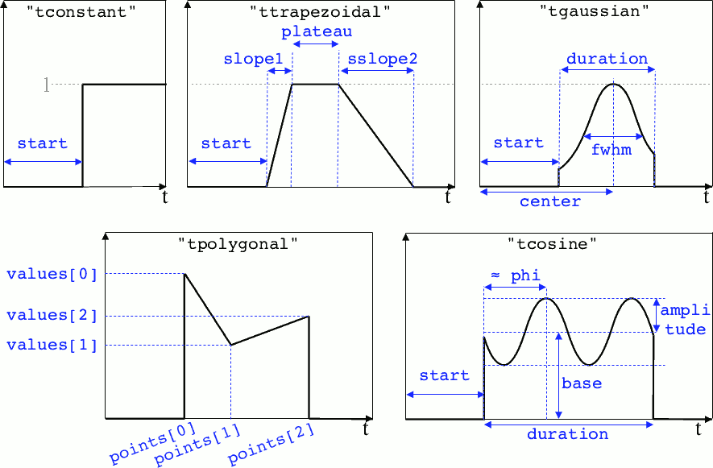
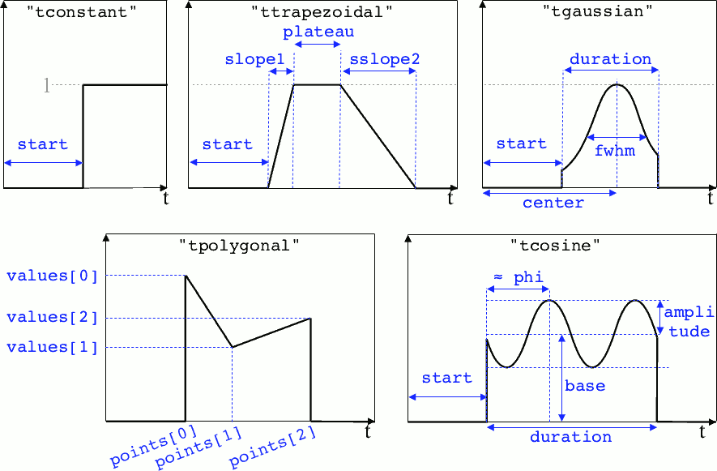

Write a namelist¶
Before you run Smilei, you need a namelist (an input file). The namelist is written in the python language. It is thus recommended to know the basics of python.
We suggest you copy one existing namelist from the folder benchmarks.
All namelists have the extension .py.
General rules¶
Smilei requires a few blocks to be defined, such as:
Main( # ... timestep = 0.01, # defines the timestep value grid_length = [10., 20.], # defines the 2D box dimensions # ... )
Outside blocks, you can calculate anything you require. Inside a block, you must only define variables for Smilei.
The python syntax requires special indentation of each line. You begin with no indentation, but you have to add four spaces at the beginning of lines inside a group, and so on. For instance:
if a == 0: timestep = 0.1 if b == 1: timestep = 0.2 else: timestep = 0.3
You will need to use lists, which are series of things in python, defined between brackets
[]and separated by commas. For example,mean_velocity = [0., 1.1, 3.].You are free to import any installed python package into the namelist. For instance, you may obtain \(\pi\) using
from math import pi.All quantities are normalized to arbitrary values: see Units.
Python workflow¶
Python is started at the beginning of the simulation (one python interpreter for each MPI process). The following steps are executed:
A few variables from Smilei are passed to python so that they are available to the user:
The rank of the current MPI process as
smilei_mpi_rank.The total number of MPI processes as
smilei_mpi_size.The maximum random integer as
smilei_rand_max.
The namelist(s) is executed.
Python runs
preprocess()if the user has defined it. This is a good place to calculate things that are not needed for post-processing with happi.The simulation is initialized (including field and particle arrays).
Python runs
cleanup()if the user has defined it. This is a good place to delete unused heavy variables.Python checks whether the python interpreter is needed during the simulation (e.g. the user has defined a temporal profile which requires python to calculate it every timestep). Otherwise, python is stopped.
All these instructions are summarized in a file smilei.py,
so that the user can directly run python -i smilei.py for post-processing purposes.
Main variables¶
The block Main is mandatory and has the following syntax:
Main(
geometry = "1Dcartesian",
interpolation_order = 2,
grid_length = [16. ],
cell_length = [0.01],
simulation_time = 15.,
timestep = 0.005,
number_of_patches = [64],
clrw = 5,
maxwell_solver = 'Yee',
EM_boundary_conditions = [
["silver-muller", "silver-muller"],
# ["silver-muller", "silver-muller"],
# ["silver-muller", "silver-muller"],
],
time_fields_frozen = 0.,
reference_angular_frequency_SI = 0.,
print_every = 100,
random_seed = 0,
)
-
geometry¶ The geometry of the simulation:
"1Dcartesian""2Dcartesian""3Dcartesian""AMcylindrical": cylindrical geometry with azimuthal Fourier decomposition. See PIC algorithms.
In the following documentation, all references to dimensions or coordinates depend on the
geometry. 1D, 2D and 3D stand for 1-dimensional, 2-dimensional and 3-dimensional cartesian geometries, respectively. All coordinates are ordered as \((x)\), \((x,y)\) or \((x,y,z)\). In the"AMcylindrical"case, all grid coordinates are 2-dimensional \((x,r)\), while particle coordinates (in Species) are expressed in the 3-dimensional Cartesian frame \((x,y,z)\).Warning
The
"AMcylindrical"geometry has some restrictions. Boundary conditions must be set to"remove"for particles,"silver-muller"for longitudinal EM boundaries and"buneman"for transverse EM boundaries. Vectorization, collisions, scalar diagnostics and order-4 interpolation are not supported yet.
-
interpolation_order¶ - Default
2
Interpolation order, defines particle shape function:
2: 3 points stencil, supported in all configurations.4: 5 points stencil, not supported in vectorized 2D geometry.
-
grid_length¶ -
number_of_cells¶ - A list of numbers: size of the simulation box for each dimension of the simulation.
Either
grid_length, the simulation length in each direction in units of \(L_r\),or
number_of_cells, the number of cells in each direction.
-
cell_length¶ A list of floats: sizes of one cell in each direction in units of \(L_r\).
-
simulation_time¶ -
number_of_timesteps¶ - Duration of the simulation.
Either
simulation_time, the simulation duration in units of \(T_r\),or
number_of_timesteps, the total number of timesteps.
-
timestep¶ -
timestep_over_CFL¶ - Duration of one timestep.
Either
timestep, in units of \(T_r\),or
timestep_over_CFL, in units of the Courant–Friedrichs–Lewy (CFL) time.
-
number_of_patches¶ A list of integers: the number of patches in each direction. Each integer must be a power of 2, and the total number of patches must be greater or equal than the number of MPI processes. It is also strongly advised to have more patches than the total number of openMP threads. See Parallelization basics.
-
patch_arrangement¶ - Default
"hilbertian"
Determines the ordering of patches and the way they are separated into the various MPI processes. Options are:
"hilbertian": following the Hilbert curve (see this explanation)."linearized_XY"in 2D or"linearized_XYZ"in 3D: following the row-major (C-style) ordering."linearized_YX"in 2D or"linearized_ZYX"in 3D: following the column-major (fortran-style) ordering. This prevents the usage of Fields diagnostics (see Parallelization basics).
-
clrw¶ - Default
set to minimize the memory footprint of the particles pusher, especially interpolation and projection processes
For advanced users. Integer specifying the cluster width along X direction in number of cells. The “cluster” is a sub-patch structure in which particles are sorted for cache improvement.
clrwmust divide the number of cells in one patch (in dimension X). The finest sorting is achieved withclrw=1and no sorting withclrwequal to the full size of a patch along dimension X. The cluster size in dimension Y and Z is always the full extent of the patch.
-
maxwell_solver¶ - Default
‘Yee’
The solver for Maxwell’s equations. Only
"Yee"is available for all geometries at the moment."Cowan","Grassi"and"Lehe"are available for2DCartesianand"Lehe"is available for3DCartesian. The Lehe solver is described in this paper
-
solve_poisson¶ - Default
True
Decides if Poisson correction must be applied or not initially.
-
poisson_max_iteration¶ - Default
50000
Maximum number of iteration for the Poisson solver.
-
poisson_max_error¶ - Default
1e-14
Maximum error for the Poisson solver.
-
solve_relativistic_poisson¶ - Default
False
Decides if relativistic Poisson problem must be solved for at least one species. See Field initialization for relativistic species for more details.
-
relativistic_poisson_max_iteration¶ - Default
50000
Maximum number of iteration for the Poisson solver.
-
relativistic_poisson_max_error¶ - Default
1e-22
Maximum error for the Poisson solver.
-
EM_boundary_conditions¶ - Type
list of lists of strings
- Default
[["periodic"]]
The boundary conditions for the electromagnetic fields. Each boundary may have one of the following conditions:
"periodic","silver-muller", or"reflective".Syntax 1:[[bc_all]], identical for all boundaries.Syntax 2:[[bc_X], [bc_Y], ...], different depending on x, y or z.Syntax 3:[[bc_Xmin, bc_Xmax], ...], different on each boundary."silver-muller"is an open boundary condition. The incident wave vector \(k_{inc}\) on each face is defined by"EM_boundary_conditions_k". When using"silver-muller"as an injecting boundary, make sure \(k_{inc}\) is aligned with the wave you are injecting. When using"silver-muller"as an absorbing boundary, the optimal wave absorption on a given face will be along \(k_{abs}\) the specular reflection of \(k_{inc}\) on the considered face.
-
EM_boundary_conditions_k¶ - Type
list of lists of floats
- Default
[[1.,0.],[-1.,0.],[0.,1.],[0.,-1.]]in 2D- Default
[[1.,0.,0.],[-1.,0.,0.],[0.,1.,0.],[0.,-1.,0.],[0.,0.,1.],[0.,0.,-1.]]in 3D
The incident unit wave vector k for each face (sequentially Xmin, Xmax, Ymin, Ymax, Zmin, Zmax) is defined by its coordinates in the xyz frame. The number of coordinates is equal to the dimension of the simulation. The number of given vectors must be equal to 1 or to the number of faces which is twice the dimension of the simulation. In cylindrical geometry, k coordinates are given in the xr frame and only the Rmax face is affected.
Syntax 1:[[1,0,0]], identical for all boundaries.Syntax 2:[[1,0,0],[-1,0,0], ...], different on each boundary.
-
time_fields_frozen¶ - Default
Time, at the beginning of the simulation, during which fields are frozen.
-
reference_angular_frequency_SI¶ The value of the reference angular frequency \(\omega_r\) in SI units, only needed when collisions, ionization, radiation losses or multiphoton Breit-Wheeler pair creation are requested. This frequency is related to the normalization length according to \(L_r\omega_r = c\) (see Units).
-
print_every¶ Number of timesteps between each info output on screen. By default, 10 outputs per simulation.
-
print_expected_disk_usage¶ - Default
True
If False, the calculation of the expected disk usage, that is usually printed in the standard output, is skipped. This might be useful in rare cases where this calculation is costly.
-
random_seed¶ - Default
the machine clock
The value of the random seed. To create a per-processor random seed, you may use the variable
smilei_mpi_rank.
-
number_of_AM¶ - Default
2
The number of azimuthal modes used for the Fourier decomposition in
"AMcylindrical"geometry. The modes range from mode 0 to mode “number_of_AM-1”.
-
number_of_AM_relativistic_field_initialization¶ - Default
1
The number of azimuthal modes used for the relativistic field initialization in
"AMcylindrical"geometry. Note that this number must be lower or equal to the number of modes of the simulation.
Load Balancing¶
Load balancing (explained here) consists in exchanging
patches (domains of the simulation box) between MPI processes to reduce the
computational load imbalance.
The block LoadBalancing is optional. If you do not define it, load balancing will
occur every 150 iterations.
LoadBalancing(
initial_balance = True,
every = 150,
cell_load = 1.,
frozen_particle_load = 0.1
)
-
initial_balance¶ - Default
True
Decides if the load must be balanced at initialization. If not, the same amount of patches will be attributed to each MPI rank.
-
every¶ - Default
150
Number of timesteps between each load balancing or a time selection. The value
0suppresses all load balancing.
-
cell_load¶ - Default
Computational load of a single grid cell considered by the dynamic load balancing algorithm. This load is normalized to the load of a single particle.
-
frozen_particle_load¶ - Default
0.1
Computational load of a single frozen particle considered by the dynamic load balancing algorithm. This load is normalized to the load of a single particle.
Vectorization¶
The block Vectorization is optional.
It controls the SIMD operations that can enhance the performance of some computations.
The technique is detailed in Ref. [Beck2019] and summarized in this doc.
It requires additional compilation options to be actived.
Vectorization(
mode = "adaptive",
reconfigure_every = 20,
initial_mode = "on"
)
-
mode¶ - Default
"off"
"off": non-vectorized operators are used. Recommended when the number of particles per cell stays below 10."on": vectorized operators are used. Recommended when the number of particles per cell stays above 10. Particles are sorted per cell."adaptive": the best operators (scalar or vectorized) are determined and configured dynamically and locally (per patch and per species). Particles are sorted per cell.
In the
"adaptive"mode,clrwis set to the maximum.
-
reconfigure_every¶ - Default
20
The number of timesteps between each dynamic reconfiguration of the vectorized operators, when using the
"adaptive"vectorization mode. It may be set to a time selection as well.
-
initial_mode¶ - Default
off
Default state when the
"adaptive"mode is activated and no particle is present in the patch.
Moving window¶
The simulated domain can move relatively to its the initial position. The “moving window”
is (almost) periodically shifted in the x_max direction.
Each “shift” consists in removing a column of patches from the x_min border and
adding a new one after the x_max border, thus changing the physical domain that the
simulation represents but keeping the same box size. This is particularly useful to
follow waves or plasma moving at high speed.
The frequency of the shifts is adjusted so that the average displacement velocity over many shifts matches the velocity
given by the user.
The user may ask for a given number of additional shifts at a given time.
These additional shifts are not taken into account for the evaluation of the average velocity of the moving window.
The block MovingWindow is optional. The window does not move it you do not define it.
MovingWindow(
time_start = 0.,
velocity_x = 1.,
number_of_additional_shifts = 0.,
additional_shifts_time = 0.,
)
-
time_start¶ - Default
The time at which the window starts moving.
-
velocity_x¶ - Default
The average velocity of the moving window in the x_max direction. It muste be between 0 and 1.
-
number_of_additional_shifts¶ - Default
The number of additional shifts of the moving window.
-
additional_shifts_time¶ - Default
The time at which the additional shifts are done.
Note
The particle binning diagnostics accept an “axis” called moving_x
corresponding to the x coordinate corrected by the moving window’s current movement.
Current filtering¶
The present version of Smilei provides a multi-pass binomial filter on the current densities, which parameters are controlled in the following block:
CurrentFilter(
model = "binomial",
passes = 0,
)
-
model¶ - Default
"binomial"
The model for current filtering. Presently, only
"binomial"current filtering is available.
-
passes¶ - Default
0
The number of passes in the filter at each timestep.
Field filtering¶
The present version of Smilei provides a method for field filtering (at the moment, only the Friedman electric field time-filter is available) which parameters are controlled in the following block:
FieldFilter(
model = "Friedman",
theta = 0.,
)
-
model - Default
"Friedman"
The model for field filtering. Presently, only
"Friedman"field filtering is available.
-
theta¶ - Default
0.
The \(\theta\) parameter (between 0 and 1) of Friedman’s method.
Species¶
Each species has to be defined in a Species block:
Species(
name = "electrons1",
position_initialization = "random",
momentum_initialization = "maxwell-juettner",
regular_number = [],
particles_per_cell = 100,
mass = 1.,
atomic_number = None,
#maximum_charge_state = None,
number_density = 10.,
# charge_density = None,
charge = -1.,
mean_velocity = [0.],
temperature = [1e-10],
boundary_conditions = [
["reflective", "reflective"],
# ["periodic", "periodic"],
# ["periodic", "periodic"],
],
# thermal_boundary_temperature = None,
# thermal_boundary_velocity = None,
time_frozen = 0.0,
# ionization_model = "none",
# ionization_electrons = None,
# ionization_rate = None,
is_test = False,
# ponderomotive_dynamics = False,
c_part_max = 1.0,
pusher = "boris",
# Radiation reaction, for particles only:
radiation_model = "none",
radiation_photon_species = "photon",
radiation_photon_sampling = 1,
radiation_photon_gamma_threshold = 2,
# Relativistic field initialization:
relativistic_field_initialization = "False",
# For photon species only:
multiphoton_Breit_Wheeler = ["electron","positron"],
multiphoton_Breit_Wheeler_sampling = [1,1]
# Merging
merging_method = "vranic_spherical",
merge_every = 5,
merge_min_particles_per_cell = 16,
merge_max_packet_size = 4,
merge_min_packet_size = 2,
merge_momentum_cell_size = [32,16,16],
)
-
name¶ The name you want to give to this species.
-
position_initialization¶ The method for initialization of particle positions. Options are:
"regular"for regularly spaced. In that case the number of particles per cell per dimension can be set by using regular_number. Otherwise, the number of particles per cell per dimension is the same in all dimensions and therefore the particles_per_cell must be an integer to the power of the simulation dimension ( i.e. a square number in dimension 2)."random"for randomly distributed"centered"for centered in each cellThe
nameof another species from which the positions are copied. This option requires (1) that the target species’ positions are initialized using one of the three other options above and (2) that the number of particles of both species are identical in each cell.A numpy array defining all the positions of the species’ particles. In this case you must also provide the weight of each particle (see Macro-particle weights). The array shape must be (Ndim+1, Npart) where Ndim is the number of particle dimensions (of the particles), and Npart is the total number of particles. Positions components x, y, z are given along the first Ndim columns and the weights are given in the last column of the array. This initialization is incompatible with
number_density,charge_densityandparticles_per_cell. Particles initialized outside of the initial simulation domain will not be created. This initalization is disregarded when running a restart.
-
regular_number¶ - Type
A python list of integers.
This list sets the number of evenly spaced particles per cell per dimension at their initial positions. The size of the list must be the simulation particle dimension. It can be used only if position_initialization is set to regular. The product of the elements of the provided list must be equal to particles_per_cell. The numbers are given in the order [Nx, Ny, Nz] in cartesian geometries and [Nx, Nr, Ntheta] in AMcylindrical in which case we advise to use \(Ntheta \geq 4\times (number\_of\_AM-1)\).
-
momentum_initialization¶ The method for initialization of particle momenta. Options are:
"maxwell-juettner"for a relativistic maxwellian (see how it is done)"rectangular"for a rectangular distribution"cold"for zero temperatureA numpy array defining all the momenta of the species’ particles (requires that
position_initializationalso be an array with the same number of particles). The array shape must be (3, Npart) where Npart is the total number of particles. Momentum components px, py, pz are given in successive columns.This initialization is incompatible withtemperatureandmean_velocity.
The first 2 distributions depend on the parameter
temperatureexplained below.
-
particles_per_cell¶ - Type
float or python function (see section Profiles)
The number of particles per cell.
-
mass¶ The mass of particles, in units of the electron mass \(m_e\).
-
atomic_number¶ - Default
0
The atomic number of the particles, required only for ionization. It must be lower than 101.
-
maximum_charge_state¶ - Default
0
The maximum charge state of a species for which the ionization model is
"from_rate".
-
number_density¶ -
charge_density¶ - Type
float or python function (see section Profiles)
The absolute value of the number density or charge density (choose one only) of the particle distribution, in units of the reference density \(N_r\) (see Units).
-
charge¶ - Type
float or python function (see section Profiles)
The particle charge, in units of the elementary charge \(e\).
-
mean_velocity¶ - Type
a list of 3 floats or python functions (see section Profiles)
The initial drift velocity of the particles, in units of the speed of light \(c\).
WARNING: For massless particles, this is actually the momentum in units of \(m_e c\).
-
temperature¶ - Type
a list of 3 floats or python functions (see section Profiles)
The initial temperature of the particles, in units of \(m_ec^2\).
-
boundary_conditions¶ - Type
a list of lists of strings
- Default
[["periodic"]]
The boundary conditions for the particles of this species. Each boundary may have one of the following conditions:
"periodic","reflective","remove"(particles are deleted),"stop"(particle momenta are set to 0), and"thermalize". For photon species (mass=0), the last two options are not available.Syntax 1:[[bc_all]], identical for all boundaries.Syntax 2:[[bc_X], [bc_Y], ...], different depending on x, y or z.Syntax 3:[[bc_Xmin, bc_Xmax], ...], different on each boundary.
-
thermal_boundary_temperature¶ - Default
None
A list of floats representing the temperature of the thermal boundaries (those set to
"thermalize"inboundary_conditions) for each spatial coordinate. Currently, only the first coordinate (x) is taken into account.
-
thermal_boundary_velocity¶ - Default
[]
A list of floats representing the components of the drift velocity of the thermal boundaries (those set to
"thermalize"inboundary_conditions).
-
time_frozen¶ - Default
The time during which the particles are “frozen”, in units of \(T_r\). Frozen particles do not move and therefore do not deposit any current density either. Nonetheless, they deposit a charge density. They are computationally much cheaper than non-frozen particles and oblivious to any EM-fields in the simulation. Note that frozen particles can be ionized (this is computationally much cheaper if ion motion is not relevant).
-
ionization_model¶ - Default
"none"
The model for ionization:
"tunnel"for field ionization (requires species with anatomic_number)"from_rate", relying on a user-defined ionization rate (requires species with amaximum_charge_state).
-
ionization_rate¶ A python function giving the user-defined ionisation rate as a function of various particle attributes. To use this option, the numpy package must be available in your python installation. The function must have one argument, that you may call, for instance,
particles. This object has several attributesx,y,z,px,py,pz,charge,weightandid. Each of these attributes are provided as numpy arrays where each cell corresponds to one particle.The following example defines, for a species with maximum charge state of 2, an ionization rate that depends on the initial particle charge and linear in the x coordinate:
from numpy import exp, zeros_like def my_rate(particles): rate = zeros_like(particles.x) charge_0 = (particles.charge==0) charge_1 = (particles.charge==1) rate[charge_0] = r0 * particles.x[charge_0] rate[charge_1] = r1 * particles.x[charge_1] return rate Species( ..., ionization_rate = my_rate )
-
ionization_electrons¶ The name of the electron species that
ionization_modeluses when creating new electrons.
-
is_test¶ - Default
False
Flag for test particles. If
True, this species will contain only test particles which do not participate in the charge and currents.
-
ponderomotive_dynamics¶ - Default
False
Flag for particles interacting with an envelope model for the laser, if present. If
True, this species will project its susceptibility and be influenced by the laser envelope field. See Laser envelope model for details on the dynamics of particles in presence of a laser envelope field.
Note
Ionization, Radiation and Multiphoton Breit-Wheeler pair creation are not yet implemented for species interacting with an envelope model for the laser.
-
c_part_max¶ to do
-
pusher¶ - Default
"boris"
Type of pusher to be used for this species. Options are:
"boris": The relativistic Boris pusher"borisnr": The non-relativistic Boris pusher"vay": The relativistic pusher of J. L. Vay"higueracary": The relativistic pusher of A. V. Higuera and J. R. Cary"norm": For photon species only (rectilinear propagation)"ponderomotive_boris": modified relativistic Boris pusher for species whose flag"ponderomotive_dynamics"isTrue. Valid only if the species has non-zero mass
-
radiation_model¶ - Default
"none"
The radiation reaction model used for this species (see Synchrotron-like radiation reaction).
"none": no radiation"Landau-Lifshitz"(orll): Landau-Lifshitz model approximated for high energies"corrected-Landau-Lifshitz"(orcll): with quantum correction""Niel": a stochastic radiation model based on the work of Niel et al.."Monte-Carlo"(ormc): Monte-Carlo radiation model. This model can be configured to generate macro-photons withradiation_photon_species.
This parameter cannot be assigned to photons (mass = 0).
Radiation is emitted only with the
"Monte-Carlo"model whenradiation_photon_speciesis defined.
-
radiation_photon_species¶ The
nameof the photon species in which the Monte-Carloradiation_modelwill generate macro-photons. If unset (orNone), no macro-photon will be created. The target photon species must be have its mass set to 0, and appear after the particle species in the namelist.This parameter cannot be assigned to photons (mass = 0).
-
radiation_photon_sampling¶ - Default
1
The number of macro-photons generated per emission event, when the macro-photon creation is activated (see
radiation_photon_species). The total macro-photon weight is still conserved.A large number may rapidly slow down the performances and lead to memory saturation.
This parameter cannot be assigned to photons (mass = 0).
-
radiation_photon_gamma_threshold¶ - Default
2
The threshold on the photon energy for the macro-photon emission when using the radiation reaction Monte-Carlo process. Under this threshold, the macro-photon from the radiation reaction Monte-Carlo process is not created but still taken into account in the energy balance. The default value corresponds to twice the electron rest mass energy that is the required energy to decay into electron-positron pairs.
This parameter cannot be assigned to photons (mass = 0).
-
relativistic_field_initialization¶ - Default
False
Flag for relativistic particles. If
True, the electromagnetic fields of this species will added to the electromagnetic fields already present in the simulation. This operation will be performed when time equalstime_frozen. See Field initialization for relativistic species for details on the computation of the electromagentic fields of a relativistic species. To have physically meaningful results, we recommend to place a species which requires this method of field initialization far from other species, otherwise the latter could experience instantly turned-on unphysical forces by the relativistic species’ fields.
-
multiphoton_Breit_Wheeler¶ - Default
[None,None]
An list of the
nameof two species: electrons and positrons created through the Multiphoton Breit-Wheeler pair creation. By default, the process is not activated.This parameter can only be assigned to photons species (mass = 0).
-
multiphoton_Breit_Wheeler_sampling¶ - Default
[1,1]
A list of two integers: the number of electrons and positrons generated per photon decay in the Multiphoton Breit-Wheeler pair creation. The total macro-particle weight is still conserved.
Large numbers may rapidly slow down the performances and lead to memory saturation.
This parameter can only be assigned to photons species (mass = 0).
Particle Injector¶
Injectors enable to inject macro-particles in the simulation domain from the boundaries.
By default, some parameters that are not specified are inherited from the associated species.
Each particle injector has to be defined in a ParticleInjector block:
ParticleInjector(
name = "injector1",
species = "electrons1",
box_side = "xmin",
# Parameters inherited from the associated `species` by default
position_initialization = "species",
momentum_initialization = "rectangular",
mean_velocity = [0.5,0.,0.],
temperature = [1e-30],
number_density = 1,
time_envelope = tgaussian(start=0, duration=10., order=4),
particles_per_cell = 16,
)
-
name The name you want to give to this injector. If you do not specify a name, it will be attributed automatically. The name is useful if you want to inject particles at the same position of another injector.
-
species The name of the species in which to inject the new particles
-
box_side¶ From where the macro-particles are injected. Options are:
"xmin""xmax"
-
position_initialization The method for initialization of particle positions. Options are:
"species"or empty"": injector uses the option of the specifiedspecies."regular"for regularly spaced"random"for randomly distributed"centered"for centered in each cellThe
nameof another injector from which the positions are copied. This option requires (1) that the target injector’ positions are initialized using one of the three other options above.
By default, injector uses the parameters provided with
species.
-
momentum_initialization The method for initialization of particle momenta. Options are:
"species"or empty"": injector uses the option of the specifiedspecies."maxwell-juettner"for a relativistic maxwellian (see how it is done)"rectangular"for a rectangular distribution
By default, injector uses the parameters provided with
species.
-
mean_velocity - Type
a list of 3 floats or python functions (see section Profiles)
The initial drift velocity of the particles, in units of the speed of light \(c\). By default (nothing specified), injector uses the parameters provided with
species.WARNING: For massless particles, this is actually the momentum in units of \(m_e c\).
-
temperature - Type
a list of 3 floats or python functions (see section Profiles)
The initial temperature of the particles, in units of \(m_ec^2\). By default (nothing specified), injector uses the parameters provided with
species.
-
particles_per_cell - Type
float or python function (see section Profiles)
The number of particles per cell to use for the injector.
-
number_density -
charge_density - Type
float or python function (see section Profiles)
The absolute value of the number density or charge density (choose one only) of the particle distribution, in units of the reference density \(N_r\) (see Units)
-
time_envelope¶ - Type
a python function or a time profile
- Default
tconstant()
The temporal envelope of the injector.
Particle Merging¶
The macro-particle merging method is documented in
the corresponding page.
It is optionnally specified in the Species block:
Species(
....
# Merging
merging_method = "vranic_spherical",
merge_every = 5,
merge_min_particles_per_cell = 16,
merge_max_packet_size = 4,
merge_min_packet_size = 2,
merge_momentum_cell_size = [32,16,16],
merge_discretization_scale = "linear",
# Extra parameters for experts:
merge_min_momentum_cell_length = [1e-10, 1e-10, 1e-10],
merge_accumulation_correction = True,
)
-
merging_method¶ - Default
"none"
The particle merging method to use:
"none": no merging"vranic_cartesian": method of M. Vranic with a cartesian momentum-space decomposition"vranic_spherical": method of M. Vranic with a spherical momentum-space decomposition
-
merge_every¶ - Default
0
Number of timesteps between each merging event or a time selection.
-
min_particles_per_cell¶ - Default
4
The minimum number of particles per cell for the merging.
-
merge_min_packet_size¶ - Default
4
The minimum number of particles per packet to merge.
-
merge_max_packet_size¶ - Default
4
The maximum number of particles per packet to merge.
-
merge_momentum_cell_size¶ - Default
[16,16,16]
A list of 3 integers defining the number of sub-groups in each direction for the momentum-space discretization.
-
merge_discretization_scale¶ - Default
"linear"
The momentum discretization scale::
"linear"or"log". The"log"scale only works with the spherical discretization at the moment.
-
merge_min_momentum¶ - Default
1e-5
[for experts] The minimum momentum value when the log scale is chosen (
merge_discretization_scale = log). This avoids a potential 0 value in the log domain.
-
merge_min_momentum_cell_length¶ - Default
[1e-10,1e-10,1e-10]
[for experts] The minimum sub-group length for the momentum-space discretization (below which the number of sub-groups is set to 1).
-
merge_accumulation_correction¶ - Default
True
[for experts] Activates the accumulation correction (see 4. Accumulation effect for more information). The correction only works in linear scale.
Lasers¶
A laser consists in applying oscillating boundary conditions for the magnetic
field on one of the box sides. The only boundary condition that supports lasers
is "silver-muller" (see EM_boundary_conditions).
There are several syntaxes to introduce a laser in Smilei:
1. Defining a generic wave
Laser( box_side = "xmin", space_time_profile = [ By_profile, Bz_profile ] space_time_profile_AM = [ Br_mode0, Bt_mode0, Br_mode1, Bt_mode1, ... ] )
-
box_side - Default
"xmin"
Side of the box from which the laser originates: at the moment, only
"xmin"and"xmax"are supported.
-
space_time_profile¶ - Type
A list of two python functions
The full wave expression at the chosen box side. It is a list of two python functions taking several arguments depending on the simulation dimension: \((t)\) for a 1-D simulation, \((y,t)\) for a 2-D simulation (etc.) The two functions represent \(B_y\) and \(B_z\), respectively. This can be used only in Cartesian geometries.
-
space_time_profile_AM¶ - Type
A list of maximum 2*`number_of_AM` python functions.
These profiles define the first modes of Br and Bt in the order shown in the above example. Undefined modes are considered zero. This can be used only in AMcylindrical geometry.
2. Defining the wave envelopes
Laser( box_side = "xmin", omega = 1., chirp_profile = tconstant(), time_envelope = tgaussian(), space_envelope = [ By_profile , Bz_profile ], phase = [ PhiY_profile, PhiZ_profile ], delay_phase = [ 0., 0. ] )This implements a wave of the form:
\[ \begin{align}\begin{aligned}B_y(\mathbf{x}, t) = S_y(\mathbf{x})\; T\left(t-t_{0y}\right) \;\sin\left( \omega(t) t - \phi_y(\mathbf{x}) \right)\\B_z(\mathbf{x}, t) = S_z(\mathbf{x})\; T\left(t-t_{0z}\right) \;\sin\left( \omega(t) t - \phi_z(\mathbf{x}) \right)\end{aligned}\end{align} \]where \(T\) is the temporal envelope, \(S_y\) and \(S_z\) are the spatial envelopes, \(\omega\) is the time-varying frequency, \(\phi_y\) and \(\phi_z\) are the phases, and we defined the delays \(t_{0y} = (\phi_y(\mathbf{x})-\varphi_y)/\omega(t)\) and \(t_{0z} = (\phi_z(\mathbf{x})-\varphi_z)/\omega(t)\).
omega¶
- Default
The laser angular frequency.
chirp_profile¶
- Type
a python function or a time profile
- Default
tconstant()The variation of the laser frequency over time, such that \(\omega(t)=\mathtt{omega}\times\mathtt{chirp\_profile}(t)\).
Warning
This definition of the chirp profile is not standard. Indeed, \(\omega(t)\) as defined here is not the instantaneous frequency, \(\omega_{\rm inst}(t)\), which is obtained from the time derivative of the phase \(\omega(t) t\).
Should one define the chirp as \(C(t) = \omega_{\rm inst}(t)/\omega\) (with \(\omega\) defined by the input parameter \(\mathtt{omega}\)), the user can easily obtain the corresponding chirp profile as defined in Smilei as:
\[\mathtt{chirp\_profile}(t) = \frac{1}{t} \int_0^t dt' C(t')\,.\]Let us give as an example the case of a linear chirp, with the instantaneous frequency \(\omega_{\rm inst}(t) = \omega [1+\alpha\,\omega(t-t_0)]\). \(C(t) = 1+\alpha\,\omega(t-t_0)\). The corresponding input chirp profile reads:
\[\mathtt{chirp\_profile}(t) = 1 - \alpha\, \omega t_0 + \frac{\alpha}{2} \omega t\]Similarly, for a geometric (exponential) chirp such that \(\omega_{\rm inst}(t) = \omega\, \alpha^{\omega t}\), \(C(t) = \alpha^{\omega t}\), and the corresponding input chirp profile reads:
\[\mathtt{chirp\_profile}(t) = \frac{\alpha^{\omega t} - 1}{\omega t \, \ln \alpha}\,.\]
time_envelope
- Type
a python function or a time profile
- Default
tconstant()The temporal envelope of the laser.
space_envelope¶
- Type
a list of two python functions or two spatial profiles
- Default
[ 1., 0. ]The two spatial envelopes \(S_y\) and \(S_z\).
phase¶
- Type
a list of two python functions or two spatial profiles
- Default
[ 0., 0. ]The two spatially-varying phases \(\phi_y\) and \(\phi_z\).
3. Defining a 1D planar wave
For one-dimensional simulations, you may use the simplified laser creator:
LaserPlanar1D( box_side = "xmin", a0 = 1., omega = 1., polarization_phi = 0., ellipticity = 0., time_envelope = tconstant() )
a0¶
- Default
The normalized vector potential
polarization_phi¶
- Default
The angle of the polarization ellipse major axis relative to the X-Y plane, in radians.
ellipticity¶
- Default
The polarization ellipticity: 0 for linear and \(\pm 1\) for circular.
4. Defining a 2D gaussian wave
For two-dimensional simulations, you may use the simplified laser creator:
LaserGaussian2D( box_side = "xmin", a0 = 1., omega = 1., focus = [50., 40.], waist = 3., incidence_angle = 0., polarization_phi = 0., ellipticity = 0., time_envelope = tconstant() )
focus¶
- Type
A list of two floats
[X, Y]The
XandYpositions of the laser focus.
waist¶The waist value. Transverse coordinate at which the field is at 1/e of its maximum value.
incidence_angle¶
- Default
The angle of the laser beam relative to the X axis, in radians.
time_envelopeTime envelope of the field (not intensity).
5. Defining a 3D gaussian wave
For three-dimensional simulations, you may use the simplified laser creator:
LaserGaussian3D( box_side = "xmin", a0 = 1., omega = 1., focus = [50., 40., 40.], waist = 3., incidence_angle = [0., 0.1], polarization_phi = 0., ellipticity = 0., time_envelope = tconstant() )This is almost the same as
LaserGaussian2D, with thefocusparameter having now 3 elements (focus position in 3D), and theincidence_anglebeing a list of two angles, corresponding to rotations around y and z, respectively.
6. Defining a gaussian wave with Azimuthal Fourier decomposition
For simulations with
"AMcylindrical"geometry, you may use the simplified laser creator:LaserGaussianAM( box_side = "xmin", a0 = 1., omega = 1., focus = [50., 0.], waist = 3., polarization_phi = 0., ellipticity = 0., time_envelope = tconstant() )Note that here, the focus is given in [x,r] coordinates.
7. Defining a generic wave at some distance from the boundary
In some cases, the laser field is not known at the box boundary, but rather at some plane inside the box. Smilei can pre-calculate the corresponding wave at the boundary using the angular spectrum method. This technique is only available in 2D and 3D cartesian geometries and requires the python packages numpy. A detailed explanation of the method is available. The laser is introduced using:
LaserOffset( box_side = "xmin", space_time_profile = [ By_profile, Bz_profile ], offset = 10., extra_envelope = tconstant(), keep_n_strongest_modes = 100, angle = 10./180.*3.14159 )
space_time_profile
- Type
A list of two python functions
The magnetic field profiles at some arbitrary plane, as a function of space and time. The arguments of these profiles are
(y,t)in 2D and(y,z,t)in 3D.
offset¶The distance from the box boundary to the plane where
space_time_profileis defined.
extra_envelope¶
- Type
a python function or a python profile
- Default
lambda *z: 1., which means a profile of value 1 everywhereAn extra envelope applied at the boundary, on top of the
space_time_profile. This envelope takes two arguments (y, t) in 2D, and three arguments (y, z, t) in 3D. As the wave propagation technique stores a limited number of Fourier modes (in the time domain) of the wave, some periodicity can be obtained in the actual laser. One may thus observe that the laser pulse is repeated several times. The envelope can be used to remove these spurious repetitions.
Laser envelope model¶
In all the available geometries, it is possible to model a laser pulse propagating in the x direction
using an envelope model (see Laser envelope model for the advantages
and limits of this approximation).
The fast oscillations of the laser are neglected and all the physical
quantities of the simulation, including the electromagnetic fields and
their source terms, as well as the particles positions and momenta, are
meant as an average over one or more optical cycles.
Effects involving characteristic lengths comparable to the laser central
wavelength (i.e. sharp plasma density profiles) cannot be modeled with
this option.
Note
The envelope model in "AMcylindrical" geometry is implemented only in the hypothesis of
cylindrical symmetry, i.e. only one azimuthal mode. Therefore, to use it the user must choose
number_of_AM = 1.
Contrarily to a standard Laser initialized with the Silver-Müller boundary conditions, the laser envelope will be entirely initialized inside the simulation box at the start of the simulation.
Currently only one laser pulse of a given frequency propagating in the positive x direction can be speficified. However, a multi-pulse set-up can be initialized if a multi-pulse profile is specified, e.g. if the temporal profile is given by two adjacents gaussian functions. The whole multi-pulse profile would have the same carrier frequency and would propagate in the positive x direction. For the moment it is not possible to specify more than one laser envelope profile, e.g. two counterpropagating lasers, or two lasers with different carrier frequency.
Please note that describing a laser through its complex envelope loses physical accuracy if its characteristic space-time variation scales are too small, i.e. of the order of the laser central wavelength (see Laser envelope model). Thus, space-time profiles with variation scales larger than this length should be used.
1. Defining a generic laser envelope
Following is the generic laser envelope creator
LaserEnvelope(
omega = 1.,
envelope_solver = 'explicit',
envelope_profile = envelope_profile,
Envelope_boundary_conditions = [["reflective"]]
)
-
omega - Default
1.
For the moment only a value of 1 is supported.
-
envelope_profile¶ - Type
a python function or a python profile
- Default
None
The laser space-time profile, so if the geometry is
3Dcartesiana function of 4 arguments (3 for space, 1 for time) is necessary. Please note that the envelope will be entirely initialized in the simulation box already at the start of the simulation, so the time coordinate will be applied to thexdirection instead of time. It is recommended to initialize the laser envelope in vacuum, separated from the plasma, to avoid unphysical results. Envelopes with variation scales near to the laser wavelength do not satisfy the assumptions of the envelope model (see Laser envelope model), yielding inaccurate results.
-
envelope_solver¶ - Default
explicit
For the moment the only available solver for the laser envelope equation is an explicit solver with centered finite differences in space and time.
-
Envelope_boundary_conditions¶ - Type
list of lists of strings
- Default
[["reflective"]]
For the moment, only reflective boundary conditions are implemented in the resolution of the envelope equation.
2. Defining a 1D laser envelope
Following is the simplified laser envelope creator in 1D
LaserEnvelopePlanar1D(
a0 = 1.,
time_envelope = tgaussian(center=150., fwhm=40.),
envelope_solver = 'explicit',
Envelope_boundary_conditions = [ ["reflective"] ],
)
3. Defining a 2D gaussian laser envelope
Following is the simplified gaussian laser envelope creator in 2D
LaserEnvelopeGaussian2D(
a0 = 1.,
focus = [150., 40.],
waist = 30.,
time_envelope = tgaussian(center=150., fwhm=40.),
envelope_solver = 'explicit',
Envelope_boundary_conditions = [ ["reflective"] ],
)
4. Defining a 3D gaussian laser envelope
Following is the simplified laser envelope creator in 3D
LaserEnvelopeGaussian3D(
a0 = 1.,
focus = [150., 40., 40.],
waist = 30.,
time_envelope = tgaussian(center=150., fwhm=40.),
envelope_solver = 'explicit',
Envelope_boundary_conditions = [ ["reflective"] ],
)
5. Defining a cylindrical gaussian laser envelope
Following is the simplified laser envelope creator in "AMcylindrical" geometry (remember that
in this geometry the envelope model can be used only if number_of_AM = 1)
LaserEnvelopeGaussianAM(
a0 = 1.,
focus = [150., 40.],
waist = 30.,
time_envelope = tgaussian(center=150., fwhm=40.),
envelope_solver = 'explicit',
Envelope_boundary_conditions = [ ["reflective"] ],
)
The arguments appearing LaserEnvelopePlanar1D, LaserEnvelopeGaussian2D,
LaserEnvelopeGaussian3D and LaserEnvelopeGaussianAM have the same meaning they would have in a
normal LaserPlanar1D, LaserGaussian2D, LaserGaussian3D and LaserGaussianAM,
with some differences:
-
time_envelope Since the envelope will be entirely initialized in the simulation box already at the start of the simulation, the time envelope will be applied in the
xdirection instead of time. It is recommended to initialize the laser envelope in vacuum, separated from the plasma, to avoid unphysical results. Temporal envelopes with variation scales near to the laser wavelength do not satisfy the assumptions of the envelope model (see Laser envelope model), yielding inaccurate results.
-
waist Please note that a waist size comparable to the laser wavelength does not satisfy the assumptions of the envelope model.
It is important to remember that the profile defined through the blocks
LaserEnvelopePlanar1D, LaserEnvelopeGaussian2D, LaserEnvelopeGaussian3D
correspond to the complex envelope of the laser vector potential component
\(\tilde{A}\) in the polarization direction.
The calculation of the correspondent complex envelope for the laser electric field
component in that direction is described in Laser envelope model.
Note that only order 2 interpolation and projection are supported in presence of
the envelope model for the laser.
External fields¶
An external field can be applied using an ExternalField block:
ExternalField(
field = "Ex",
profile = constant(0.01, xvacuum=0.1)
)
-
field¶ Field name:
"Ex","Ey","Ez","Bx","By"or"Bz".
-
profile¶ - Type
float or python function (see section Profiles)
The initial spatial profile of the applied field. Refer to Units to understand the units of this field.
Antennas¶
An antenna is an extra current applied during the whole simulation.
It is applied using an Antenna block:
Antenna(
field = "Jz",
space_profile = gaussian(0.01),
time_profile = tcosine(base=0., duration=1., freq=0.1)
)
-
field The name of the current:
"Jx","Jy"or"Jz".
-
space_profile¶ - Type
float or python function (see section Profiles)
The initial spatial profile of the applied antenna. Refer to Units to understand the units of this current.
-
time_profile¶ - Type
float or python function (see section Profiles)
The temporal profile of the applied antenna. It multiplies
space_profile.
Profiles¶
Several quantities require the input of a profile: particle charge, particle density, external fields, etc. Depending on the case, they can be spatial or temporal profiles.
1. Constant profiles
Species( ... , charge = -3., ... )defines a species with charge \(Z^\star=3\).Species( ... , number_density = 10., ... )defines a species with density \(10\,N_r\). You can choosenumber_densityorcharge_densitySpecies( ... , mean_velocity = [0.05, 0., 0.], ... )defines a species with drift velocity \(v_x = 0.05\,c\) over the whole box.Species(..., momentum_initialization="maxwell-juettner", temperature=[1e-5], ...)defines a species with a Maxwell-Jüttner distribution of temperature \(T = 10^{-5}\,m_ec^2\) over the whole box. Note that the temperature may be anisotropic:temperature=[1e-5, 2e-5, 2e-5].Species( ... , particles_per_cell = 10., ... )defines a species with 10 particles per cell.ExternalField( field="Bx", profile=0.1 )defines a constant external field \(B_x = 0.1 B_r\).
2. Python profiles
Any python function can be a profile. Examples:
def f(x): if x<1.: return 0. else: return 1.import math def f(x,y): # two variables for 2D simulation twoPI = 2.* math.pi return math.cos( twoPI * x/3.2 )f = lambda x: x**2 - 1.Once the function is created, you have to include it in the block you want, for example:
Species( ... , charge = f, ... ) Species( ... , mean_velocity = [f, 0, 0], ... )
Note
It is possible, for higher performances, to create functions with arguments (x, y, etc.) that are actually numpy arrays. If the function returns a numpy array of the same size, it will automatically be considered as a profile acting on arrays instead of single floats. Currently, this feature is only available on Species’ profiles.
3. Pre-defined spatial profiles
constant(value, xvacuum=0., yvacuum=0.)¶
- Parameters
value – the magnitude
xvacuum – vacuum region before the start of the profile.
trapezoidal(max, xvacuum=0., xplateau=None, xslope1=0., xslope2=0., yvacuum=0., yplateau=None, yslope1=0., yslope2=0.)¶
- Parameters
max – maximum value
xvacuum – empty length before the ramp up
xplateau – length of the plateau (default is
grid_length\(-\)xvacuum)xslope1 – length of the ramp up
xslope2 – length of the ramp down
gaussian(max, xvacuum=0., xlength=None, xfwhm=None, xcenter=None, xorder=2, yvacuum=0., ylength=None, yfwhm=None, ycenter=None, yorder=2)¶
- Parameters
max – maximum value
xvacuum – empty length before starting the profile
xlength – length of the profile (default is
grid_length\(-\)xvacuum)xfwhm – gaussian FWHM (default is
xlength/3.)xcenter – gaussian center position (default is in the middle of
xlength)xorder – order of the gaussian.
- Note
If
yorderequals 0, then the profile is constant over \(y\).
polygonal(xpoints=[], xvalues=[])¶
- Parameters
xpoints – list of the positions of the points
xvalues – list of the values of the profile at each point
cosine(base, amplitude=1., xvacuum=0., xlength=None, xphi=0., xnumber=1)¶
- Parameters
base – offset of the profile value
amplitude – amplitude of the cosine
xvacuum – empty length before starting the profile
xlength – length of the profile (default is
grid_length\(-\)xvacuum)xphi – phase offset
xnumber – number of periods within
xlength
polynomial(x0=0., y0=0., z0=0., order0=[], order1=[], ...)¶
- Parameters
x0,y0 – The reference position(s)
order0 – Coefficient for the 0th order
order1 – Coefficient for the 1st order (2 coefficients in 2D)
order2 – Coefficient for the 2nd order (3 coefficients in 2D)
etc –
Creates a polynomial of the form
\[\begin{split}\begin{eqnarray} &\sum_i a_i(x-x_0)^i & \quad\mathrm{in\, 1D}\\ &\sum_i \sum_j a_{ij}(x-x0)^{i-j}(y-y0)^j & \quad\mathrm{in\, 2D}\\ &\sum_i \sum_j \sum_k a_{ijk}(x-x0)^{i-j-k}(y-y0)^j(z-z0)^k & \quad\mathrm{in\, 3D} \end{eqnarray}\end{split}\]Each
orderiis a coefficient (or list of coefficents) associated to the orderi. In 1D, there is only one coefficient per order. In 2D, eachorderiis a list ofi+1coefficients. For instance, the second order has three coefficients associated to \(x^2\), \(xy\) and \(y^2\), respectively. In 3D, eachorderiis a list of(i+1)*(i+2)/2coefficients. For instance, the second order has 6 coefficients associated to \(x^2\), \(xy\), \(xz\), \(y^2\), \(yz\) and \(z^2\), respectively.Examples:
Species( ... , density = gaussian(10., xfwhm=0.3, xcenter=0.8), ... ) ExternalField( ..., profile = constant(2.2), ... )
4. Pre-defined temporal profiles
tconstant(start=0.)¶
- Parameters
start – starting time
ttrapezoidal(start=0., plateau=None, slope1=0., slope2=0.)¶
- Parameters
start – starting time
plateau – duration of the plateau (default is
simulation_time\(-\)start)slope1 – duration of the ramp up
slope2 – duration of the ramp down
tgaussian(start=0., duration=None, fwhm=None, center=None, order=2)¶
- Parameters
start – starting time
duration – duration of the profile (default is
simulation_time\(-\)start)fwhm – gaussian FWHM (default is
duration/3.)center – gaussian center time (default is in the middle of
duration)order – order of the gaussian
tpolygonal(points=[], values=[])¶
- Parameters
points – list of times
values – list of the values at each time
tcosine(base=0., amplitude=1., start=0., duration=None, phi=0., freq=1.)¶
- Parameters
base – offset of the profile value
amplitude – amplitude of the cosine
start – starting time
duration – duration of the profile (default is
simulation_time\(-\)start)phi – phase offset
freq – frequency
tpolynomial(t0=0., order0=[], order1=[], ...)¶
- Parameters
t0 – The reference position
order0 – Coefficient for the 0th order
order1 – Coefficient for the 1st order
order2 – Coefficient for the 2nd order
etc –
Creates a polynomial of the form \(\sum_i a_i(t-t_0)^i\).
tsin2plateau(start=0., fwhm=0., plateau=None, slope1=fwhm, slope2=slope1)¶
- Parameters
start – Profile is 0 before start
fwhm – Full width half maximum of the profile
plateau – Length of the plateau
slope1 – Duration of the ramp up of the profil
slope2 – Duration of the ramp down of the profil
Creates a sin squared profil with a plateau in the middle if needed. If slope1 and 2 are used, fwhm is overwritten.
Example:
Antenna( ... , time_profile = tcosine(freq=0.01), ... )
Illustrations of the pre-defined spatial and temporal profiles
 

Walls¶
A wall can be introduced using a PartWall block in order to
reflect, stop, thermalize or kill particles which reach it:
PartWall(
kind = "reflective",
x = 20.
)
-
kind¶ The kind of wall:
"reflective","stop","thermalize"or"remove".
Collisions¶
Binary collisions are specified by one or several Collisions blocks:
Collisions(
species1 = ["electrons1", "electrons2"],
species2 = ["ions1"],
coulomb_log = 5.,
debug_every = 1000,
ionizing = False,
# nuclear_reaction = [],
)
-
species1¶ -
species2¶ Lists of species’
name.The collisions will occur between all species under the group
species1and all species under the groupspecies2. For example, to collide all electrons with ions:species1 = ["electrons1", "electrons2"], species2 = ["ions"]
Warning
This does not make
electrons1collide withelectrons2.The two groups of species have to be completely different OR exactly equal. In other words, if
species1is not equal tospecies2, then they cannot have any common species. If the two groups are exactly equal, we call this situation intra-collisions.Note
If both lists
species1andspecies2contain only one species, the algorithm is potentially faster than the situation with several species in one or the other list. This is especially true if the machine accepts SIMD vectorization.
-
coulomb_log¶ - Default
The Coulomb logarithm.
If \(= 0\), the Coulomb logarithm is automatically computed for each collision.
If \(> 0\), the Coulomb logarithm is equal to this value.
-
debug_every¶ - Default
0
Number of timesteps between each output of information about collisions. If 0, there will be no outputs.
-
ionizing¶ - Default
False
Collisional ionization is set when this parameter is not
False. It can either be set to the name of a pre-existing electron species (where the ionized electrons are created), or toTrue(the first electron species inspecies1orspecies2is then chosen for ionized electrons).One of the species groups must be all electrons (
mass= 1), and the other one all ions of the sameatomic_number.
-
nuclear_reaction¶ - Type
a list of strings
- Default
None(no nuclear reaction)
A list of the species names for the products of nuclear reactions that may occur during collisions. You may omit product species if they are not necessary for the simulation.
All members of
species1must be the same type of atoms, which is automatically recognized by theirmassandatomic_number. The same applies for all members ofspecies2.In the current version, only the reaction D(d,n)He³ is available.
-
nuclear_reaction_multiplier¶ - Type
a float
- Default
(automatically adjusted)
The rate multiplier for nuclear reactions. It is a positive number that artificially increases the occurence of reactions so that a good statistics is obtained. The number of actual reaction products is adjusted by changing their weights in order to provide a physically correct number of reactions. Leave this number to
0.for an automatic rate multiplier: the final number of produced macro-particles will be of the same order as that of reactants.
Radiation reaction¶
The block RadiationReaction() enables to tune the radiation loss properties
(see Synchrotron-like radiation reaction).
Many parameters are used for the generation of the cross-section tables
for the Monte-Carlo emission process.
If the tables already exist in the simulation directory, then they will be read
and no new table will be generated by Smilei.
Otherwise, Smilei can compute and output these
tables.
RadiationReaction(
# Radiation parameters
minimum_chi_continuous = 1e-3,
minimum_chi_discontinuous = 1e-2,
table_path = "../databases/",
compute_table = False,
# Following parameters are only if you want to compute the tables
output_format = "hdf5",
# Parameters to generate the table h used by Niel et al.
h_chipa_min = 1E-3,
h_chipa_max = 1E1,
h_dim = 128,
h_computation_method = "table",
# Parameter to generate the table integfochi used by the Monte-Carlo model
integfochi_chipa_min = 1e-4,
integfochi_chipa_max = 1e1,
integfochi_dim = 128,
# Parameter to generate the table xip used by the Monte-Carlo model
xip_chipa_min = 1e-4,
xip_chipa_max = 1e1,
xip_power = 4,
xip_threshold = 1e-3,
xip_chipa_dim = 128,
xip_chiph_dim = 128,
)
-
output_format¶ - Default
"hdf5"
Output format of the tables:
"hdf5","binary"or"ascii".
-
minimum_chi_continuous¶ - Default
1e-3
Threshold on the particle quantum parameter particle_chi. When a particle has a quantum parameter below this threshold, radiation reaction is not taken into account.
-
minimum_chi_discontinuous¶ - Default
1e-2
Threshold on the particle quantum parameter particle_chi between the continuous and the discontinuous radiation model.
-
table_path¶ - Default
"./"
Path to the external tables for the radiation losses. Default tables are located in
databases.
-
compute_table¶ - Default
False
If True, the tables for the selected radiation model are computed with the requested parameters and stored at the path table_path.
-
h_chipa_min¶ - Default
1e-3
Minimum value of the quantum parameter \(\chi\) for the table h of Niel et al.
-
h_chipa_max¶ - Default
1e1
Maximum value of the quantum parameter \(\chi\) for the table h of Niel et al.
-
h_dim¶ - Default
128
Dimension of the table h of Niel et al.
-
h_computation_method¶ - Default
“table”
Method to compute the value of the table h of Niel et al during the emission process. The possible values are:
“table”: the h function is tabulated. The table is computed at initialization or read from an external file.
“fit5”: A polynomial fit of order 5 is used. No table is required. The maximal relative error to the reference data is of maximum of 0.02. The fit is valid for quantum parameters \(\chi\) between 1e-3 and 10.
“fit10”: A polynomial fit of order 10 is used. No table is required. The precision if better than the fit of order 5 with a maximal relative error of 0.0002. The fit is valid for quantum parameters \(\chi\) between 1e-3 and 10.
“ridgers”: The fit of Ridgers given in Ridgers et al., ArXiv 1708.04511 (2017)
The use of tabulated values is best for accuracy but not for performance. Table access prevent total vectorization. Fits are vectorizable.
-
integfochi_chipa_min¶ - Default
1e-3
Minimum value of the quantum parameter c for the table containing the integration of \(F/\chi\).
-
integfochi_chipa_max¶ - Default
1e1
Maximum value of the quantum parameter \(\chi\) for the table containing the integration of \(F/\chi\).
-
integfochi_dim¶ - Default
128
Discretization of the table containing the integration of \(F/\chi\).
-
xip_chipa_min¶ - Default
1e-3
Minimum particle quantum parameter for the computation of the chimin and xip tables.
-
xip_chipa_max¶ - Default
1e1
Maximum particle quantum parameter for the computation of the chimin and xip tables.
-
xip_power¶ - Default
4
Maximum decrease in order of magnitude for the search for the minimum value of the photon quantum parameter. It is advised to keep this value by default.
-
xip_threshold¶ - Default
1e-3
Minimum value of xip to compute the minimum value of the photon quantum parameter. It is advised to keep this value by default.
-
xip_chipa_dim¶ - Default
128
Discretization of the chimin and xip tables in the particle_chi direction.
-
xip_chiph_dim¶ - Default
128
Discretization of the xip tables in the photon_chi direction.
Multiphoton Breit-Wheeler¶
The block MultiphotonBreitWheeler enables to tune parameters of the
multiphoton Breit-Wheeler process and particularly the table generation.
There are two tables used for the multiphoton Breit-Wheeler refers to as the T table and the xip table.
MultiphotonBreitWheeler(
# Table output format, can be "ascii", "binary", "hdf5"
output_format = "hdf5",
# Path to the tables
table_path = "../databases/",
# Flag to compute the tables
compute_table = False,
# Table T parameters
T_chiph_min = 1e-2,
T_chiph_max = 1e1,
T_dim = 128,
# Table xip parameters
xip_chiph_min = 1e-2,
xip_chiph_max = 1e1,
xip_power = 4,
xip_threshold = 1e-3,
xip_chipa_dim = 128,
xip_chiph_dim = 128,
)
-
table_path - Default
"./"
Path to the external tables for the multiphoton Breit-Wheeler. Default tables are located in
databases.
-
compute_table - Default
False
If True, the tables for the selected radiation model are computed with the requested parameters and stored at the path table_path.
-
output_format - Default
"hdf5"
- Output format of the tables:
"hdf5":multiphoton_Breit_Wheeler_tables.h5"binary":tab_T.binandtab_mBW_xip.bin"ascii":tab_T.datandtab_mBW_xip.dat
-
T_chiph_min¶ - Default
1e-2
Minimum value of the photon quantum parameter \(\chi_\gamma\) for the table T.
-
T_chiph_max¶ - Default
1e1
Maximum value of the photon quantum parameter \(\chi_\gamma\) for the table T.
-
T_dim¶ - Default
128
Dimension of the table T.
-
xip_chiph_min¶ - Default
1e-2
Minimum photon quantum parameter for the computation of the chimin and xip tables.
-
xip_chiph_max¶ - Default
1e1
Maximum photon quantum parameter for the computation of the chimin and xip tables.
-
xip_power - Default
4
Maximum decrease in order of magnitude for the search for the minimum value of the photon quantum parameter. It is advised to keep this value by default.
-
xip_threshold - Default
1e-3
Minimum value of xip to compute the minimum value of the photon quantum parameter. It is advised to keep this value by default.
-
xip_chiph_dim - Default
128
Discretization of the chimin and xip tables in the photon_chi direction.
-
xip_chipa_dim - Default
128
Discretization of the xip tables in the particle_chi direction.
Scalar diagnostics¶
Smilei can collect various scalar data, such as total particle energy, total field energy, etc.
This is done by including the block DiagScalar:
DiagScalar(
every = 10 ,
vars = ["Utot", "Ukin", "Uelm"],
precision = 10
)
-
every Number of timesteps between each output or a time selection.
-
vars¶ - Default
[]
List of scalars that will be actually output. Note that most scalars are computed anyways.Omit this argument to include all scalars.
-
precision¶ - Default
10
Number of digits of the outputs.
The full list of available scalars is given in the table below.
Warning
As some of these quantities are integrated in space and/or time, their units are unusual, and depend on the simulation dimension. All details here.
Space-integrated energy densities |
|
Utot
Ukin
Uelm
Uexp
Ubal
Ubal_norm
Uelm_Ex
Urad
|
Total
Total kinetic (in the particles)
Total electromagnetic (in the fields)
Expected (Initial \(-\) lost \(+\) gained)
Balance (Utot \(-\) Uexp)
Normalized balance (Ubal \(/\) Utot)
Ex field contribution (\(\int E_x^2 dV /2\))
… same for fields Ey, Ez, Bx_m, By_m and Bz_m
Total radiated
|
Space- & time-integrated Energies lost/gained at boundaries |
|
Ukin_bnd
Uelm_bnd
PoyXminInst
PoyXmin
|
Time-accumulated kinetic energy exchanged at the boundaries
Time-accumulated EM energy exchanged at boundaries
Poynting contribution through xmin boundary during the timestep
Time-accumulated Poynting contribution through xmin boundary
… same for other boundaries
|
Particle information |
|
Zavg_abc
Dens_abc
Ukin_abc
Urad_abc
Ntot_abc
|
Average charge of species “abc” (equals nan if no particle)
… its integrated density
… its integrated kinetic energy density
… its integrated radiated energy density
… and number of macro-particles
|
Fields information |
|
ExMin
ExMinCell
ExMax
ExMaxCell
|
Minimum of \(E_x\)
… and its location (cell index)
Maximum of \(E_x\)
… and its location (cell index)
… same for fields Ey Ez Bx_m By_m Bz_m Jx Jy Jz Rho
|
Checkout the post-processing documentation as well.
Fields diagnostics¶
Smilei can collect various field data (electromagnetic fields, currents and density)
taken at the location of the PIC grid, both as instantaneous values and averaged values.
This is done by including a block DiagFields:
DiagFields(
every = 10,
time_average = 2,
fields = ["Ex", "Ey", "Ez"],
#subgrid = None
)
-
every Number of timesteps between each output or a time selection.
-
flush_every¶ - Default
1
Number of timesteps or a time selection.
When flush_every coincides with every, the output file is actually written (“flushed” from the buffer). Flushing too often can dramatically slow down the simulation.
-
time_average¶ - Default
1(no averaging)
The number of timesteps for time-averaging.
-
fields¶ - Default
[](all fields are written)
List of the field names that are saved. By default, they all are. The full list of fields that are saved by this diagnostic:
BxByBzComponents of the magnetic fieldBx_mBy_mBz_mComponents of the magnetic field (time-centered)ExEyEzComponents of the electric fieldJxJyJzComponents of the total currentJx_abcJy_abcJz_abcComponents of the current due to species “abc”RhoRho_abcTotal densityDensity of species “abc”In
AMcylindricalgeometry, thex,yandzindices are replaced byl(longitudinal),r(radial) andt(theta). In addition, the angular Fourier modes are denoted by the suffix_mode_iwhereiis the mode number. If a field is specified without its associated mode number, all available modes will be included. In summary, the list of fields reads as follows.Bl_mode_0, Bl_mode_1, etc.Br_mode_0, Br_mode_1, etc.Bt_mode_0, Bt_mode_1, etc.Components of the magnetic fieldEl_mode_0, El_mode_1, etc.Er_mode_0, Er_mode_1, etc.Et_mode_0, Et_mode_1, etc.Components of the electric fieldThe same notation works for Jl, Jr, Jt, and Rho
In the case of an envelope model for the laser (see Laser envelope model), the following fields are also available:
Env_A_absModule of laser vector potential’s complex envelope\(\tilde{A}\) (component along the polarizationdirection)Env_ChiTotal susceptibility \(\chi\)Env_E_absModule of laser electric field’s complex envelope\(\tilde{E}\) (component along the polarizationdirection)
Note
To write these last three envelope fields with this diagnostics in "AMcylindrical" geometry,
a dedicated block DiagFields must be defined, e.g. with fields = ["Env_A_abs_mode_0", "Env_Chi_mode_0"].
-
subgrid¶ - Default
None(the whole grid is used)
A list of slices indicating a portion of the simulation grid to be written by this diagnostic. This list must have as many elements as the simulation dimension. For example, in a 3D simulation, the list has 3 elements. Each element can be:
None, to select the whole grid along that dimensionan integer, to select only the corresponding cell index along that dimension
a python slice object to select regularly-spaced cell indices along that dimension.
This can be easily implemented using the numpy.s_ expression. For instance, in a 3D simulation, the following subgrid selects only every other element in each dimension:
from numpy import s_ DiagFields( #... subgrid = s_[::2, ::2, ::2] )
while this one selects cell indices included in a contiguous parallelepiped:
subgrid = s_[100:300, 300:500, 300:600]
Probe diagnostics¶
The fields from the previous section are taken at the PIC grid locations, but it is also possible to obtain the fields at arbitrary locations. These are called probes.
A probe interpolates the fields at either one point (0-D), several points arranged in a line (1-D), or several points arranged in a 2-D or 3-D grid.
Note
Probes follow the moving window. To obtain the fields at fixed points in the plasma instead, create a cold, chargeless species, and track the particles.
To add one probe diagnostic, include the block DiagProbe:
DiagProbe(
every = 10,
origin = [1., 1.],
corners = [
[1.,10.],
[10.,1.],
]
number = [100, 100],
fields = ["Ex", "Ey", "Ez"]
)
-
every Number of timesteps between each output or a time selection.
-
flush_every - Default
1
Number of timesteps or a time selection.
When flush_every coincides with every, the output file is actually written (“flushed” from the buffer). Flushing too often can dramatically slow down the simulation.
-
origin¶ - Type
A list of floats, of length equal to the simulation dimensionality.
The coordinates of the origin of the probe grid
-
corners¶ -
vectors¶ - Type
A list of lists of floats.
Defines the corners of the probe grid. Each corner is a list of coordinates (as many as the simulation dimensions).
When using
corners, the absolute coordinates of each corner must be specified. When usingvectors, the coordinates relative tooriginmust be specified.
-
number¶ - Type
A list of integers, one for each dimension of the probe.
The number of points in each probe axis. Must not be defined for a 0-D probe.
-
fields - Default
[], which means["Ex", "Ey", "Ez", "Bx", "By", "Bz", "Jx", "Jy", "Jz", "Rho"]
A list of fields among
"Ex","Ey","Ez","Bx","By","Bz","Jx","Jy","Jz"and"Rho". Only listed fields will be saved although they are all calculated.The contributions of each species to the currents and the density are also available, although they are not included by default. They may be added to the list as
"Jx_abc","Jy_abc","Jz_abc"or"Rho_abc", whereabcis the species name.In the case of an envelope model for the laser (see Laser envelope model), the following fields are also available:
"Env_A_abs","Env_Chi","Env_E_abs".Note that when running a simulation in cylindrical geometry, contrary to the Field diagnostic, Probes are defined as in a 3D Cartesian geometry and return Cartesian fields.
Examples of probe diagnostics
0-D probe in 1-D simulation
DiagProbe( every = 1, origin = [1.2] )
1-D probe in 1-D simulation
DiagProbe( every = 1, origin = [1.2], corners = [[5.6]], number = [100] )
1-D probe in 2-D simulation
DiagProbe( every = 1, origin = [1.2, 4.], corners = [[5.6, 4.]], number = [100] )
2-D probe in 2-D simulation
DiagProbe( every = 1, origin = [0., 0.], corners = [ [10.,0.], [0.,10.] ], number = [100, 100] )
ParticleBinning diagnostics¶
A particle binning diagnostic collects data from the macro-particles and processes them during runtime. It does not provide information on individual particles: instead, it produces averaged quantities like the particle density, currents, etc.
The data is discretized inside a “grid” chosen by the user. This grid may be of any dimension.
Examples:
1-dimensional grid along the position \(x\) (gives density variation along \(x\))
2-dimensional grid along positions \(x\) and \(y\) (gives density map)
1-dimensional grid along the velocity \(v_x\) (gives the velocity distribution)
2-dimensional grid along position \(x\) and momentum \(p_x\) (gives the phase-space)
1-dimensional grid along the kinetic energy \(E_\mathrm{kin}\) (gives the energy distribution)
3-dimensional grid along \(x\), \(y\) and \(E_\mathrm{kin}\) (gives the density map for several energies)
1-dimensional grid along the charge \(Z^\star\) (gives the charge distribution)
0-dimensional grid (simply gives the total integrated particle density)
Each dimension of the grid is called “axis”.
You can add a particle binning diagnostic by including a block DiagParticleBinning() in the namelist,
for instance:
DiagParticleBinning(
deposited_quantity = "weight",
every = 5,
time_average = 1,
species = ["electrons1", "electrons2"],
axes = [
["x", 0., 10, 100],
["ekin", 0.1, 100, 1000, "logscale", "edge_inclusive"]
]
)
-
deposited_quantity¶ The type of data that is summed in each cell of the grid. Consider reading this to understand the meaning of the
weight."weight"results in a number density."weight_charge"results in a charge density."weight_charge_vx"results in the \(j_x\) current density (same with \(y\) and \(z\))."weight_p"results in the momentum density (same with \(p_x\), \(p_y\) and \(p_z\))."weight_ekin"results in the energy density."weight_vx_px"results in thexxpressure (same with yy, zz, xy, yz and xz)."weight_chi"results in the quantum parameter density (only for species with radiation losses).with a user-defined python function, an arbitrary quantity can be calculated (the numpy module is necessary). This function should take one argument, for instance
particles, which contains the attributesx,y,z,px,py,pz,charge,weight,chiandid. Each of these attributes is a numpy array containing the data of all particles in one patch. The function must return a numpy array of the same shape, containing the desired deposition of each particle. For example, defining the following function:def stuff(particles): return particles.weight * particles.px
passed as
deposited_quantity=stuff, the diagnostic will sum the weights \(\times\; p_x\).You may also pass directly an implicit (lambda) function using:
deposited_quantity = lambda p: p.weight * p.px
-
every The number of time-steps between each output, or a time selection.
-
flush_every - Default
1
Number of timesteps or a time selection.
When flush_every coincides with every, the output file is actually written (“flushed” from the buffer). Flushing too often can dramatically slow down the simulation.
-
time_average - Default
1
The number of time-steps during which the data is averaged before output.
-
species A list of one or several species’
name. All these species are combined into the same diagnostic.
-
axes¶ A list of “axes” that define the grid. There may be as many axes as wanted (there may be zero axes).
Syntax of one axis:
[type, min, max, nsteps, "logscale", "edge_inclusive"]typeis one of:"x","y","z": spatial coordinates ("moving_x"with a moving window)"px","py","pz","p": momenta"vx","vy","vz","v": velocities"gamma","ekin": energies"chi": quantum parameter"charge": the particles’ electric chargeor a python function with the same syntax as the
deposited_quantity. Namely, this function must accept one argument only, for instanceparticles, which holds the attributesx,y,z,px,py,pz,charge,weightandid. Each of these attributes is a numpy array containing the data of all particles in one patch. The function must return a numpy array of the same shape, containing the desired quantity of each particle that will decide its location in the histogram binning.
The axis is discretized for
typefrommintomaxinnstepsbins.The optional keyword
logscalesets the axis scale to logarithmic instead of linear.The optional keyword
edge_inclusiveincludes the particles outside the range [min,max] into the extrema bins.
Examples of particle binning diagnostics
Variation of the density of species
electron1from \(x=0\) to 1, every 5 time-steps, without time-averagingDiagParticleBinning( deposited_quantity = "weight", every = 5, time_average = 1, species = ["electron1"], axes = [ ["x", 0., 1., 30] ] )
Density map from \(x=0\) to 1, \(y=0\) to 1
DiagParticleBinning( deposited_quantity = "weight", every = 5, time_average = 1, species = ["electron1"], axes = [ ["x", 0., 1., 30], ["y", 0., 1., 30] ] )
Velocity distribution from \(v_x = -0.1\) to \(0.1\)
DiagParticleBinning( deposited_quantity = "weight", every = 5, time_average = 1, species = ["electron1"], axes = [ ["vx", -0.1, 0.1, 100] ] )
Phase space from \(x=0\) to 1 and from \(px=-1\) to 1
DiagParticleBinning( deposited_quantity = "weight", every = 5, time_average = 1, species = ["electron1"], axes = [ ["x", 0., 1., 30], ["px", -1., 1., 100] ] )
Energy distribution from 0.01 to 1 MeV in logarithmic scale. Note that the input units are \(m_ec^2 \sim 0.5\) MeV
DiagParticleBinning( deposited_quantity = "weight", every = 5, time_average = 1, species = ["electron1"], axes = [ ["ekin", 0.02, 2., 100, "logscale"] ] )
\(x\)-\(y\) density maps for three bands of energy: \([0,1]\), \([1,2]\), \([2,\infty]\). Note the use of
edge_inclusiveto reach energies up to \(\infty\)DiagParticleBinning( deposited_quantity = "weight", every = 5, time_average = 1, species = ["electron1"], axes = [ ["x", 0., 1., 30], ["y", 0., 1., 30], ["ekin", 0., 6., 3, "edge_inclusive"] ] )
Charge distribution from \(Z^\star =0\) to 10
DiagParticleBinning( deposited_quantity = "weight", every = 5, time_average = 1, species = ["electron1"], axes = [ ["charge", -0.5, 10.5, 11] ] )
Screen diagnostics¶
A screen collects data from the macro-particles when they cross a surface. It processes this data similarly to the particle binning diagnostics as it makes a histogram of the macro-particle properties. The only difference is that the histogram is made only by the particles that cross the surface.
You can add a screen by including a block DiagScreen() in the namelist,
for instance:
DiagScreen(
shape = "plane",
point = [5., 10.],
vector = [1., 0.],
direction = "canceling",
deposited_quantity = "weight",
species = ["electron"],
axes = [["a", -10.*l0, 10.*l0, 40],
["px", 0., 3., 30]],
every = 10
)
-
shape¶ The shape of the screen surface:
"plane"or"sphere".
-
point¶ - Type
A list of floats
[X]in 1D,[X,Y]in 2D,[X,Y,Z]in 3D
The coordinates of a point that defines the screen surface: a point of the
"plane"or the center of the"sphere".
-
vector¶ - Type
A list of floats
[X]in 1D,[X,Y]in 2D,[X,Y,Z]in 3D
The coordinates of a vector that defines the screen surface: the normal to the
"plane"or a radius of the"sphere".
-
direction¶ - Default
"both"
Determines how particles are counted depending on which side of the screen they come from.
"both"to account for both sides."forward"for only the ones in the direction of thevector."backward"for only the ones in the opposite direction."canceling"to count negatively the ones in the opposite direction.
-
deposited_quantity Identical to the
deposited_quantityof particle binning diagnostics.
-
every The number of time-steps between each output, or a time selection.
-
flush_every - Default
1
Number of timesteps or a time selection.
When flush_every coincides with every, the output file is actually written (“flushed” from the buffer). Flushing too often can dramatically slow down the simulation.
-
species A list of one or several species’
name. All these species are combined into the same diagnostic.
-
axes A list of “axes” that define the grid of the histogram. It is identical to that of particle binning diagnostics, with the addition of four types of axes:
If
shape="plane", then"a"and"b"are the axes perpendicular to thevector.If
shape="sphere", then"theta"and"phi"are the angles with respect to thevector.
TrackParticles diagnostics¶
A particle tracking diagnostic records the macro-particle positions and momenta at various timesteps. Typically, this is used for plotting trajectories.
You can add a tracking diagnostic by including a block DiagTrackParticles() in the namelist,
for instance:
DiagTrackParticles(
species = "electron",
every = 10,
# flush_every = 100,
# filter = my_filter,
# attributes = ["x", "px", "py", "Ex", "Ey", "Bz"]
)
-
species The
nameof the species to be tracked.
-
every - Default
0
Number of timesteps between each output of particles trajectories, or a time selection. If non-zero, the particles positions will be tracked and written in a file named
TrackParticlesDisordered_abc.h5(whereabcis the species’name).
-
flush_every - Default
1
Number of timesteps or a time selection.
When
flush_everycoincides withevery, the output file for tracked particles is actually written (“flushed” from the buffer). Flushing too often can dramatically slow down the simulation.
-
filter¶ A python function giving some condition on which particles are tracked. If none provided, all particles are tracked. To use this option, the numpy package must be available in your python installation.
The function must have one argument, that you may call, for instance,
particles. This object has several attributesx,y,z,px,py,pz,charge,weightandid. Each of these attributes are provided as numpy arrays where each cell corresponds to one particle. The function must return a boolean numpy array of the same shape, containingTruefor particles that should be tracked, andFalseotherwise.The following example selects all the particles that verify \(-1<p_x<1\) or \(p_z>3\):
def my_filter(particles): return (particles.px>-1.)*(particles.px<1.) + (particles.pz>3.)
Note
The id attribute contains the particles identification number.
This number is set to 0 at the beginning of the simulation. Only after particles have
passed the filter, they acquire a positive id.
Note
For advanced filtration, Smilei provides the quantity Main.iteration,
accessible within the filter function. Its value is always equal to the current
iteration number of the PIC loop. The current time of the simulation is thus
Main.iteration * Main.timestep.
-
attributes¶ - Default
["x","y","z","px","py","pz"]
A list of strings indicating the particle attributes to be written in the output. The attributes may be the particles’ spatial coordinates (
"x","y","z"), their momenta ("px","py","pz"), their electrical charge ("q"), their statistical weight ("weight"), their quantum parameter ("chi", only for species with radiation losses) or the fields interpolated at their positions ("Ex","Ey","Ez","Bx","By","Bz").
Performances diagnostics¶
The performances diagnostic records information on the computational load and timers for each MPI process or for each patch in the simulation.
Only one block DiagPerformances() may be added in the namelist, for instance:
DiagPerformances(
every = 100,
# flush_every = 100,
# patch_information = True,
)
-
every - Default
0
Number of timesteps between each output, or a time selection.
-
flush_every - Default
1
Number of timesteps or a time selection.
When
flush_everycoincides withevery, the output file is actually written (“flushed” from the buffer). Flushing too often might dramatically slow down the simulation.
-
patch_information¶ - Default
False
If True, some information is calculated at the patch level (see
Performances()) but this may impact the code performances.
Time selections¶
Several components (mainly diagnostics) may require a selection of timesteps to
be chosen by the user. When one of these timesteps is reached, the diagnostics will
output data. A time selection is given through the parameter every and is a list
of several numbers.
You may chose between five different syntaxes:
every = [ period ] # Syntax 1
every = [ start, period ] # Syntax 2
every = [ start, end, period ] # Syntax 3
every = [ start, end, period, repeat ] # Syntax 4
every = [ start, end, period, repeat, spacing ] # Syntax 5
where
startis the first timestep of the selection (defaults to 0);endis the last timestep of the selection (defaults to ∞);periodis the separation between outputs (defaults to 1);repeatindicates how many outputs to do at each period (defaults to 1);spacingis the separation between each repeat (defaults to 1).
For more clarity, this graph illustrates the five syntaxes for time selections:

Tips
The syntax
every = periodis also accepted.Any value set to
0will be replaced by the default value.Special case:
every=0means no output.The numbers may be non-integers (apart from
repeat). The closest timesteps are chosen.
Checkpoints¶
The simulation state can be saved (dumped) at given times (checkpoints) in order to be later restarted at that point.
A few things are important to know when you need dumps and restarts.
Do not restart the simulation in the same directory as the previous one. Files will be overwritten, and errors may occur. Create a new directory for your restarted simulation.
Manage your disk space: each MPI process dumps one file, and the total can be significant.
The restarted runs must have the same namelist as the initial simulation, except the Checkpoints block, which can be modified.
Checkpoints(
# restart_dir = "dump1",
dump_step = 10000,
dump_minutes = 240.,
exit_after_dump = True,
keep_n_dumps = 2,
)
Parameters to save the state of the current simulation
dump_step¶
- Default
0The number of timesteps between each dump. If
0, no dump is done.
dump_minutes¶
- Default
0.The number of minutes between each dump. If
0., no dump is done.May be used in combination with
dump_step.
exit_after_dump¶
- Default
TrueIf
True, the code stops after the first dump. IfFalse, the simulation continues.
keep_n_dumps¶
- Default
2This tells Smilei to keep, in the current run, only the last
ndumps. Older dumps will be overwritten.The default value,
2, saves one extra dump in case of a crash during the next dump.
file_grouping¶
- Default
NoneThe maximum number of checkpoint files that can be stored in one directory. Subdirectories are created to accomodate for all files. This is useful on filesystem with a limited number of files per directory.
dump_deflate¶to do
Parameters to restart from a previous simulation
restart_dir¶
- Default
NoneThe directory of a previous run from which Smilei should restart. For the first run, do not specify this parameter.
This path must either absolute or be relative to the current directory.
Note
In many situations, the restarted runs will have the exact same namelist as the initial simulation, except this
restart_dirparameter, which points to the previous simulation folder. You can use the same namelist file, and simply add an extra argument when you launch the restart:
mpirun ... ./smilei mynamelist.py "Checkpoints.restart_dir='/path/to/previous/run'"
restart_number¶
- Default
NoneThe number of the dump (in the previous run) that should be used for the restart. For the first run, do not specify this parameter.
In a previous run, the simulation state may have been dumped several times. These dumps are numbered 0, 1, 2, etc. until the number
keep_n_dumps.
Variables defined by Smilei¶
Smilei passes the following variables to the python interpreter for use in the namelist. They should not be re-defined by the user!
-
smilei_mpi_rank¶ The MPI rank of the current process.
-
smilei_mpi_size¶ The total number of MPI processes.
-
smilei_rand_max¶ The largest random integer.
As an example of their use, this script randomizes both python’s and Smilei’s random seeds.
import random, math
# reshuffle python random generator
random.seed(random.random()*smilei_mpi_rank)
# get 32bit pseudo random integer to be passed to smilei
random_seed = random.randint(0,smilei_rand_max)